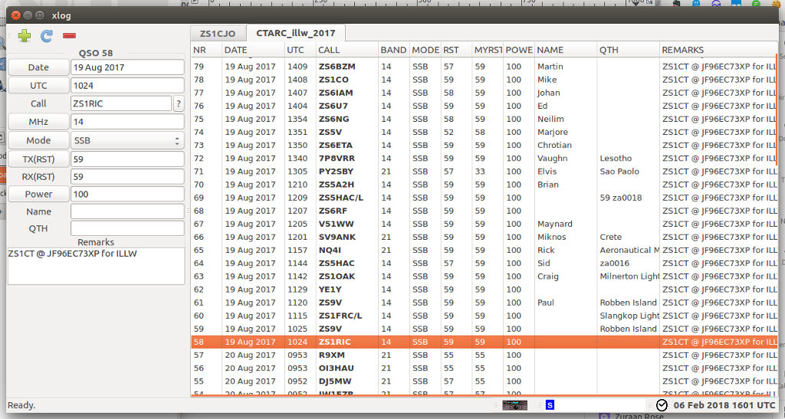

Intro to Electronic QSL
A crash course in getting started
by Charles Oertel (ZS1CJO)
Agenda
- Quiz
- Intro to Electronic Logging
- The CTARC ILLS Weekend Logging Process
- Log Format Examples
Quiz
Who ...- ... keeps their logs in a paper logbook?
- ... keeps logs in software on their computer?
- ... uses an online QSL service?
- ... has their log software automatically capture data from the radio?
Intro to Electronic Logging
- Definition: A computer version of your paper station logbook.
- It could be ...
- ... a computer program: spreadsheet, DXKeeper, Logger 32, SwissLog, XLog, (Google for more)
- ... a website (LoTW, eQSL, ClugLog, etc.).
- ... a combination of the above
Why You Should Keep Your Logs Online:
- Safer: your logs are kept and managed by professionals and are safer from computer crashes or theft
- More Functionality:
- Easy for others to confirm QSOs
- Sophisticated reporting tools
- Automatic/Manual submissions for various awards
- Look up details of a callsign
- Cheaper: no postage fees and hassle
Online QSL Sites:
- LoTW*: lotw.arrl.org/lotwuser/default
- eQSL*: www.eqsl.cc
- SARL*: sarl.org.za
- ClubLog: www.clublog.org
- QRZ.com: qrz.com
* Used by CTARC
LotW
Logbook of The World
http://www.arrl.org/logbook-of-the-world
- Logbook of the World (LoTW) is an online service that enables you to
- electronically submit contacts (QSOs) for confirmation
- view your submitted QSOs and resulting confirmations online
- electronically submit confirmations for credit toward DXCC, VUCC, WAS, WAZ and WPX awards
- view your DXCC, VUCC, WAS, WAZ and WPX award progress online
eQSL
http://www.eqsl.cc

SARL
- For local contests, QSLs and Awards.
- For SARL members only.
- Current online logging mechanisms hand-built and not very robust.
Electronic Logging Process
CTARC ILLW Logs
- During the ILLS weekend QSOs are logged on paper.
- The paper logs are captured electronically to be imported to various sites:
- LoTW,
- eQSL, and
- the SARL.
Capturing the Logs
Paper logs often hard to read or interpret...
XLog
An Open Source logging program. You can use any other program that allows exporting to ADIF and/or CSV.
Exporting from XLog
We need to export to:
- ADIF, and
- CSV.
Importing Log Data to QSL Websites
LoTW
Review Confirmed QSOs
Setup TrustedQSL
- Uploads are done by a certificate-secured program called 'TrustedQSL'
- The first time, you need to request a certificate from the computer where it will be used. I got a new laptop and had to re-apply.
- It is possible to have more than one certificate/callsign/location, and club callsigns are supported.
Upload Log File to LoTW using TrustedQSl
eQSL
SARL
Requirements for Capturing QSLs:
- The QSL account for CTARC needs to be linked to the profile of a paid up SARL member. You do this by emailing a request to the webmaster of the SARL site at webmaster@sarl.org.za.
- The site accepts only new ADIF format uploads, or CSV files with the following format:
ZS0123,SSB,20050811,1200,40m
- The process is buggy and I ended up sending the CSV file to the webmaster by email to upload.
Log Formats
ADIF
Amateur Data Interchange Format
ADIF Export from xlog Version 2.0.13
Copyright (C) 2012 Andy Stewart <andystewart@comcast.net>
Copyright (C) 2001-2010 Joop Stakenborg <pg4i@amsat.org>
Internet: http://savannah.nongnu.org/projects/Xlog
Date of export: 06 Feb 2018 16:08:09
Callsign: ZS1CJO
Locator: JF95FW
<ADIF_VER:5>2.2.7
<EOH>
<QSO_DATE:8>20170819 <TIME_ON:4>1000 <CALL:4>ZS9V <FREQ:1>7 <MODE:3>SSB <RST_SENT:2>59 <RST_RCVD:2>59 <TX_PWR:3>100 <NAME:5>Andre <QTH:13>Robben Island <COMMENT:27>ZS1CT @ JF96EC73XP for ILLW
<EOR>
<QSO_DATE:8>20170819 <TIME_ON:4>1035 <CALL:5>ZS1CO <FREQ:1>7 <MODE:3>SSB <RST_SENT:2>59 <RST_RCVD:2>59 <TX_PWR:3>100 <NAME:4>Mike <COMMENT:27>ZS1CT @ JF96EC73XP for ILLW
<EOR>
...
CSV
Comma Separated Values.
V51B,SSB,20160820,1104,40m
ZS1ROD,SSB,20160820,1106,40m
ZS2ABZ/L,SSB,20160820,1108,40m
ZS3RW/L,SSB,20160820,1109,40m
ZS1VDP/L,SSB,20160820,1114,40m
Thanks...
... to CTARC for the opportunity to learn about electronic logging.
Charles (ZS1CJO)
charles@honeybadger.net